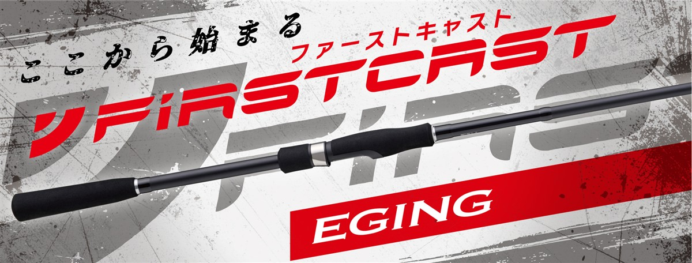
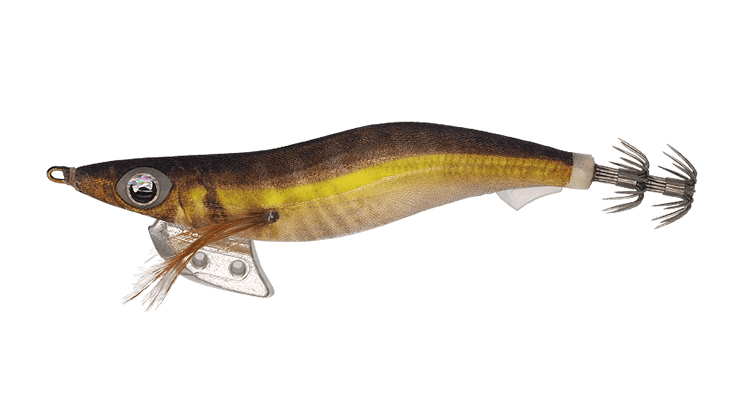

NEWファーストキャスト エギングモデル
（NEW FIRSTCAST Eging model）
更新日：2026年11月5日
NEWファーストキャスト エギングモデル（NEW FIRSTCAST Eging model）はMajor Craft（メジャークラフト）のエギングロッドです。
ショアルアーゲームロッドの定番ファーストキャストがリニューアルしたシリーズで、税込7,150円からそろう全5モデルで、これからエギングを本気で楽しみたい人の最初の1本に向いています。
初級者から中級者まで満足できるコスパ最強ロッドで、はじめてのエギングを始めるのに最適の1本です。

画像出典:メジャークラフト公式HP
スペック
- メーカー
- Major Craft（メジャークラフト）
- タイプ
- エギングロッド（スピニング）
- モデル数
- 5モデル
- 長さ
- 7'9"〜8'6"
- 継数
- 2ピース
- 対応エギ
- 1.5〜4.0号
- PEライン
- 0.4〜1.2号
- 自重
- 88g〜110g
- アクション
- レギュラーファースト
- 価格
- 7,150円〜7,700円（税込）
- 発売
- 2026年10月
▼今すぐチェック
ファーストキャスト エギングの特徴
これからエギングを始める人に向いた、コスパの高い全5モデル
-
初級者から中級者まで満足のコスパ最強ロッド
価格は税込7,150円から。手頃な価格ながら初級者から中級者まで満足できる内容で、はじめてのエギングを始めるのに最適の1本。
-
操作性を重視したブランクス
中弾性カーボンをメインクロスに採用。キャストのしやすさとルアーの操作性の良さを考えたブランクス設計になっている。
-
ライントラブルを減らすKガイド
富士工業製のKガイドフレームを採用。強さと軽さを両立し、ライントラブルも減らしている。
-
使い手を選ばないグリップ
握りやすさと操作性を重視した、バランスの良いグリップデザイン。リールシートはアップロック。
ファーストキャスト エギングの使い方
まずは3号前後のエギをキャストして、着底させてからシャクりましょう。
シャクったあとにテンションを抜いてフォールさせ、その間にアタリを取るのが基本です。長さ違いのモデルがあるので、足場の高さや飛距離で選びます。
ファーストキャスト エギングがおすすめの人
これからエギングを始める人や、2本目を手頃な価格で揃えたい人に向いたシリーズです。
秋の小型中心ならML、一年を通して狙うならMが候補になります。
扱いやすい長さから選べるので、初めてのアオリイカが釣れるまでの1本としておすすめです。
エギング以外の釣りにも使える
エギングだけでなく、ちょい投げ釣りやサビキ釣りなどにも使えるので、初めての釣りにもおすすめです。1本持っておけば、イカ釣りから堤防の五目釣りまで楽しめます。
使う仕掛けは、ロッドの対応範囲に収まる軽めのものを選びましょう。
ワンポイント
迷ったら公式が「始めるならこのモデル」としているFCE-832MLから検討しましょう。中高生や女性には、短くて振り抜きやすいFCE-792MLも候補です。
ファーストキャスト エギングモデルの使い分け
| モデル | 長さ／対応ルアー／自重／価格（税込） | 得意な場面 |
|---|---|---|
| FCE-792ML | 7'9"／エギ1.5〜3.5号／88g／7,150円 | 短めで振り抜きやすい。秋から冬に |
| FCE-832ML | 8'3"／エギ1.5〜3.5号／90g／7,480円 | 初心者に一番おすすめ。エギングを始めるならこのモデル |
| FCE-862ML | 8'6"／エギ1.5〜3.5号／92g／7,700円 | 秋から冬に、3号前後を軽快に操作 |
| FCE-832M | 8'3"／エギ2.0〜4.0号／107g／7,480円 | 軽快な操作性で一年を通して |
| FCE-862M | 8'6"／エギ2.0〜4.0号／110g／7,700円 | 遠投して広く探る。一年を通して |
MLは秋から冬の軽快な釣りに、Mは一年を通した釣りに向いています。迷ったら8フィート3インチのFCE-832MLが基準になります。
ファーストキャスト エギングの番手別チェック
番手ごとの特徴と、購入先のリンクです。
FCE-792ML
7'9"／エギ1.5〜3.5号／88g／7,150円
シリーズで最も短い7フィート9インチで、自重も88gと最軽量のモデルです。公式は秋から冬のシーズンにおすすめとしていて、中高生や女性にも振り抜きやすい長さに仕上げています。短いぶんシャクリの動きがコンパクトになるので、小型のイカが多い秋に、2.5〜3号のエギをテンポよく動かす釣りに向いています。遠投が必要な広い釣り場では、8フィート台の番手のほうが届かせやすくなります。
▼今すぐチェック
FCE-832ML
8'3"／エギ1.5〜3.5号／90g／7,480円
初心者に一番おすすめしたいのがこの番手です。公式も「エギングを始めるならこのモデル」としていて、3号前後のエギの操作性に優れています。8フィート3インチは長すぎず短すぎず、堤防でキャストもシャクリもしやすい長さです。自重90gと軽いので、シャクリ続けても疲れにくくなります。迷ったら、まずこの番手を選びましょう。
▼今すぐチェック
FCE-862ML
8'6"／エギ1.5〜3.5号／92g／7,700円
832MLと同じ1.5〜3.5号に対応しながら、3インチ長い8フィート6インチのモデルです。公式は秋から冬のエギングにおすすめとしていて、3号前後のエギを軽快に操作できます。長さのぶんエギを遠くへ飛ばしやすく、足場の高い堤防でもラインを操作しやすくなります。遠くのポイントや高い足場が多いなら、832MLよりこちらです。
▼今すぐチェック
FCE-832M
8'3"／エギ2.0〜4.0号／107g／7,480円
2.0〜4.0号のエギに対応する、パワーのあるモデルです。公式は軽快な操作性を重視し、一年を通してエギングを楽しめるとしています。8フィート3インチの扱いやすい長さのまま、3.5号以上の重いエギもしっかり動かせるので、春の親イカ狙いまで1本で通したい人に向いています。秋の小型中心なら、軽いMLのほうが扱いやすくなります。
▼今すぐチェック
FCE-862M
8'6"／エギ2.0〜4.0号／110g／7,700円
2.0〜4.0号のエギに対応する、シリーズで最も長くパワーのあるモデルです。公式も遠投性に優れ、広範囲を探れるとしています。8フィート6インチの長さと張りで3.5号以上のエギも遠くへ届かせやすいので、広い堤防や磯で春の大型を狙う釣りに向いています。自重は110gあるので、軽快さを重視するなら832Mが候補です。
▼今すぐチェック
あわせてチェックしたいアイテム
-

エギ王K ヤマシタ 詳細はこちら＞2.5号から4号まで揃う定番エギ。最初に買うエギとして組み合わせやすい。
-
 エギ政改
DUO
詳細はこちら＞
エギ政改
DUO
詳細はこちら＞
重さ16gの3.0号があるエギ。ローテーションに加えたい1本。
-
 ファーストキャスト ライトゲーム
メジャークラフト
詳細はこちら＞
ファーストキャスト ライトゲーム
メジャークラフト
詳細はこちら＞
同じシリーズのライトゲームロッド。アジやメバルも楽しみたくなった時に。